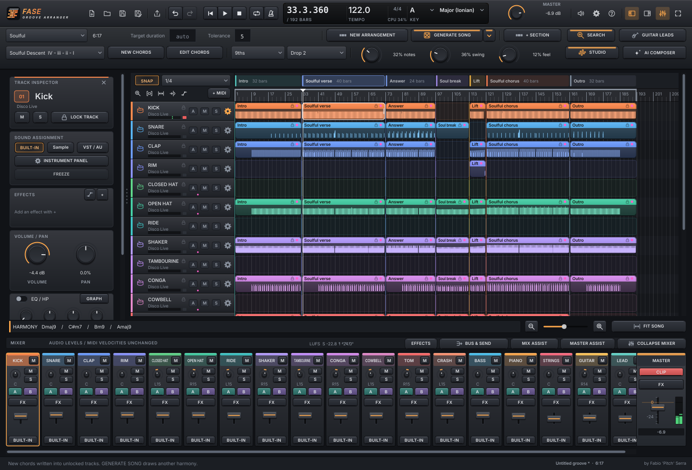

Piano
v0.31.13Accordi ricchi, voicing, bassi e archi. Scegli la progressione nel circolo delle quinte, modella il groove e porta il MIDI nella tua DAW.
VST3 / AU / STANDALONE
Musica house. Idee che prendono forma.
Accordi, ritmiche, melodie e brani completi. Piano, Guitar, Drums, Lead e Arranger: cinque strumenti gratuiti e open source per trasformare l’ispirazione nella tua prossima traccia.

La famiglia Fase Groove
Crea parti MIDI nella tua DAW, oppure costruisci un brano completo con Arranger.
Accordi ricchi, voicing, bassi e archi. Scegli la progressione nel circolo delle quinte, modella il groove e porta il MIDI nella tua DAW.
Strumming, chank e ritmiche funk. Dodici modi di suonare gli accordi, con variazioni, fill e un tocco di umanizzazione.
Il battito della tua traccia. Modella tredici voci di batteria con swing, accenti, ghost note e fill. Ascolta il kit guida o carica i tuoi campioni.
La melodia che resta in testa. Hook, risposte e arpeggi monofonici che seguono gli accordi, con dodici corsie melodiche. Ascolta il synth guida, poi trascina il MIDI sul tuo suono.
Dall’intro all’outro, con i motori Piano, Drums, Guitar e Lead già integrati. Quindici generi, inclusi Techno ed Electro House, 18 tracce di base ed espansione fino a 32. Scegli campioni o plugin, modifica MIDI e audio, poi esporta mix e stem.

Windows: driver ASIO® per schede audio a bassa latenza. ASIO è un marchio registrato di Steinberg Media Technologies GmbH.Windows 10/11 (64 bit), macOS 11+ Intel e Apple Silicon, Linux. I pulsanti Download aprono sempre l’ultima release disponibile, con installer Windows e pacchetti ZIP.
Le novità, dentro la musica.
Scrivi una durata obiettivo e GENERA BRANO costruisce la forma su quella lunghezza, entro la tolleranza scelta. Lascia il campo vuoto e la durata la sceglie il generatore.
Trascina un loop o uno stem sulla timeline: si apre lo Studio. Togli i silenzi, cambia velocità o guadagno e la clip sulla traccia si aggiorna da sola. Tempo e tonalità vengono rilevati, così l’audio segue il progetto o il progetto l’audio.
Gli assistenti Mix e Mastering mostrano LUFS, true peak, cresta e correlazione con la loro scala, dall’analisi al confronto A/B. Ogni suggerimento lo decidi tu.
Clip che seguono il mouse con SNAP e griglie fini, energia per sezione e pulsanti e manopole con un aspetto da hardware 3D. La rotellina scorre la vista senza toccare i valori.
Meno ostacoli, più musica
Parti da un genere, una tonalità e un groove che ti ispira.
Usa LINK per sincronizzare Piano, Guitar, Drums e Lead, oppure riunisci i quattro motori in Arranger.
Esporta il MIDI e scegli i tuoi suoni, oppure crea mix e stem audio in Arranger. Le note sono un punto di partenza: la direzione è tua.
Un progetto di Fabio ‘Pitch’ Serra · Windows, macOS e Linux · Open source